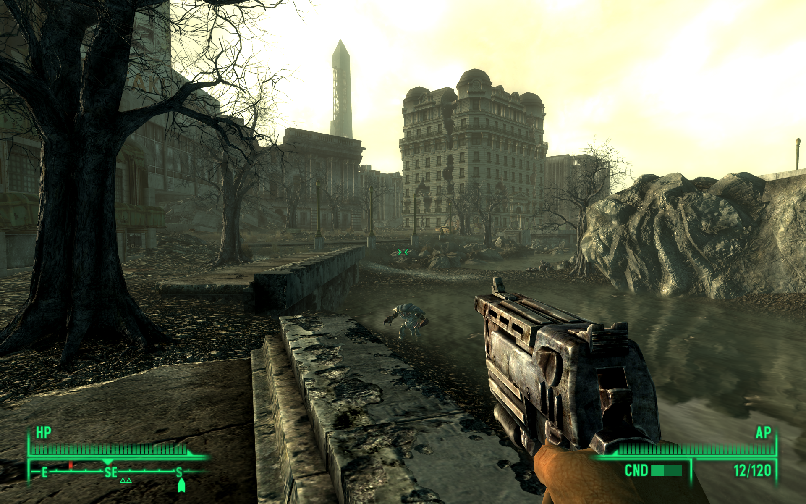
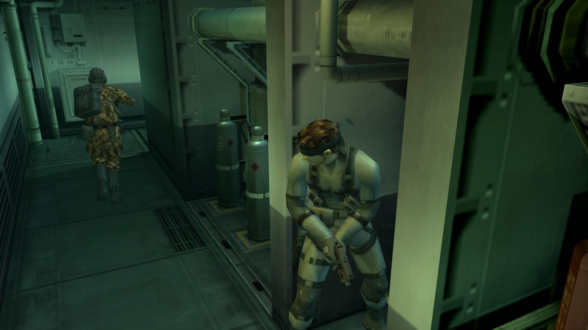
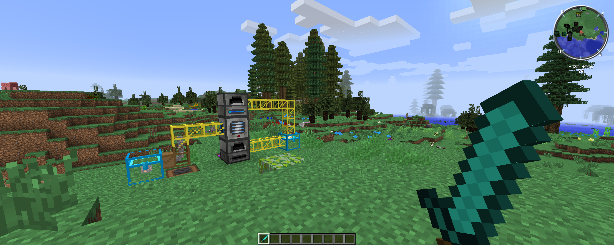
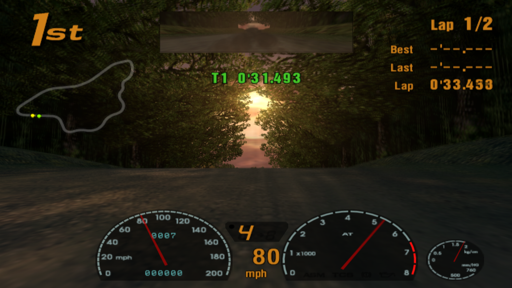
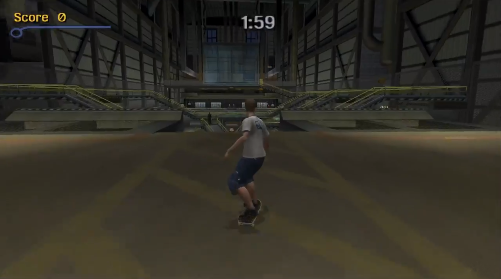
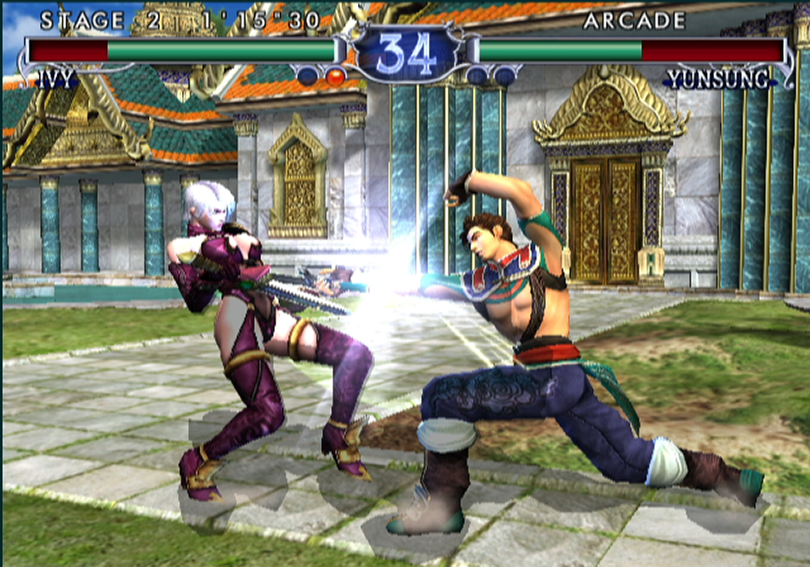
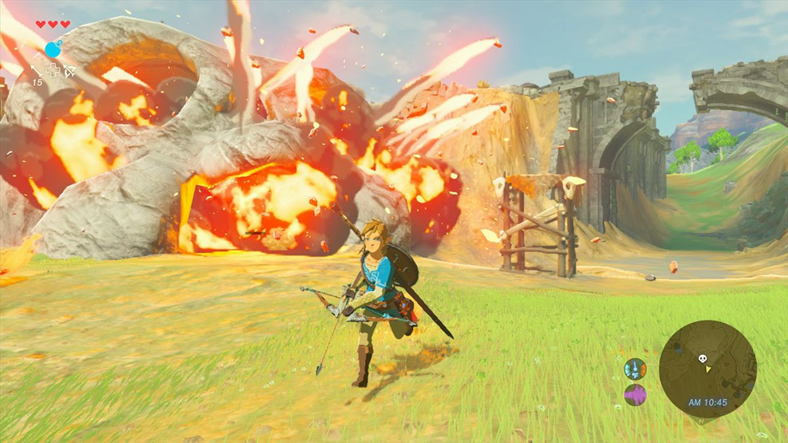
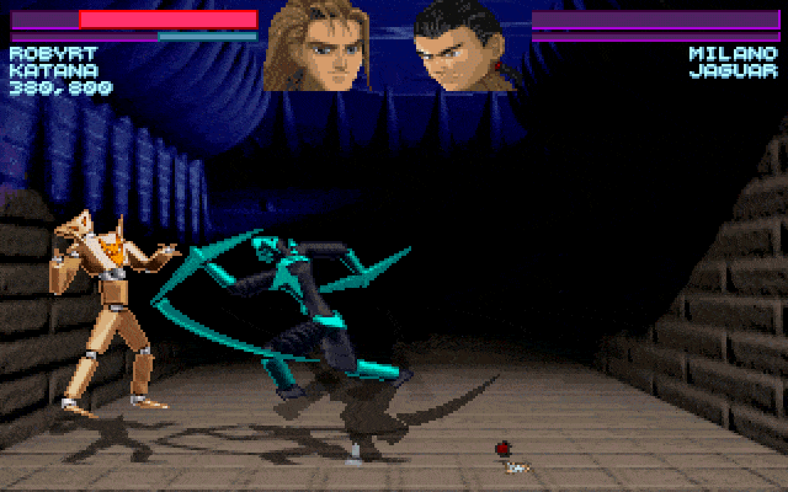
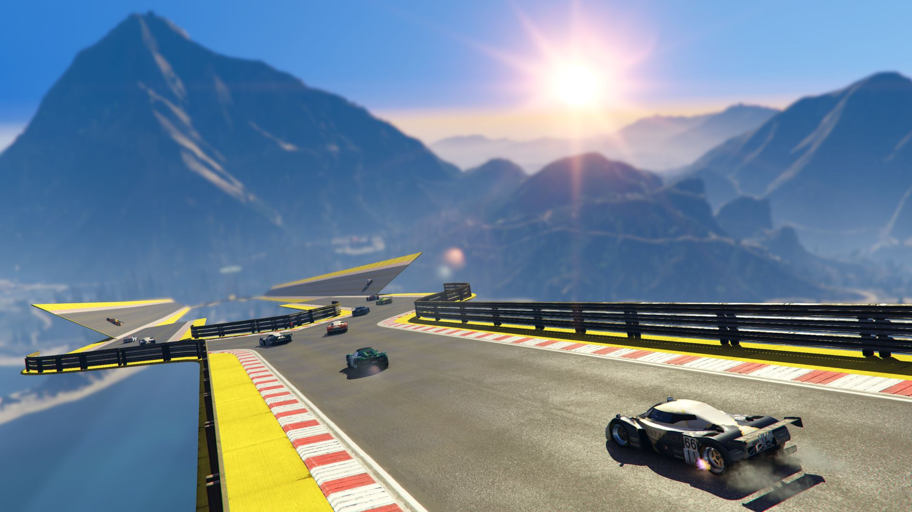
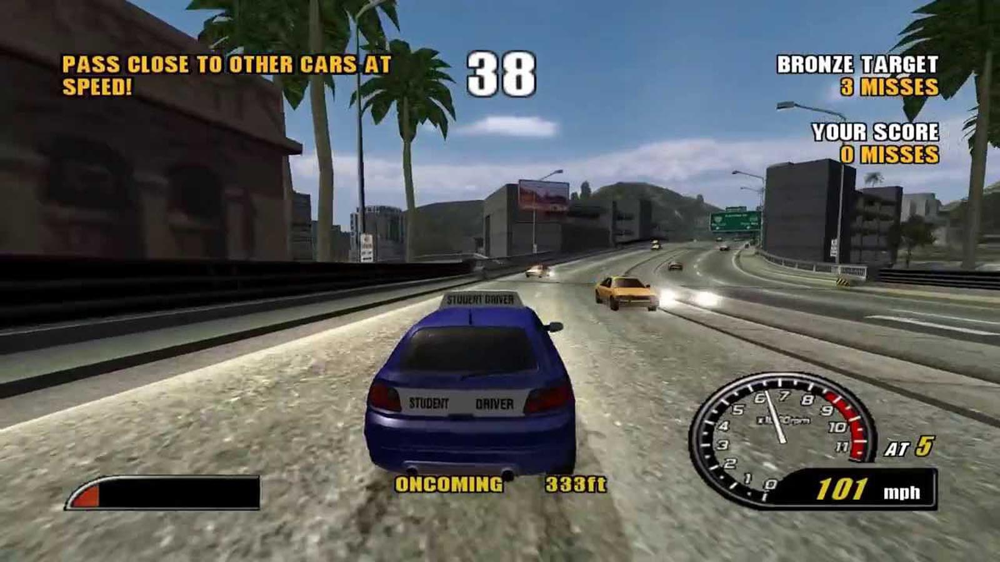

The other day I saw that my friend Looch had replied to a tweet from Zachary Ryan asking people to answer with their top ten games as quickly as possible. I quickly rattled off my own list and replied. I've been thinking about it since and although there are some notable games missing from my list I think it covers the games I have spent the most time playing along with the games that had the largest impacts on me. So here they are...
1) Fallout 3

Fallout 3 was the first of the Fallout games that I ever played and it was the first game that I'm aware of putting over one hundered hours into (around 120 hours according to my savegame). At the time I played it it was unlike anything I'd ever played before. The world seemed vast and I happily spent hours exploring everything in the game and the additional DLCs.
2) Metal Gear Solid 2: The Sons of Liberty

I distinctly remember the day I got MGS2. When I heard the parcel hit the doormat I took my PS2 downstairs, plugged it in to the "Big TV" in the living room and started playing. The next thing I remember is looking out of the window and noticing that it had got dark.
Over the next few days I carried on playing through this legendary game. It was the first game I'd ever encountered that made nods to the fact that it knew it was a game, there's a number of strange interactions in the latter parts of the game that would best be referred to as meta. It was also the closest thing to an interactive movie that I had ever experienced.
This game will always hold a special place in my heart despite the fact I'm unlikely to ever play it again. It was re-released in HD along with MGS and MGS3 and I bought it but I just found the controls utterly impenetrable now.
3) Minecraft

I first started playing Minecraft while in Tokyo after the big earthquake in 2011. I was stuck in an apartment and in need of a distraction so I started mining.
After that I dipped in and out of Minecraft now and then until some friends of mine got into it too. Then I started hosting a shared server for us all to play various mods on. When I met Cat, she started playing online with us too. Two years later we got married and we had our Minecraft characters on our wedding cake!
The modpacks available for Minecraft are amazing. They add new materials, new characters, literal new dimensions, other planets, vehicles, machines, weapons, all sorts of things. Cat and I currently have a server running where we're playing The 1.7.10 Pack but it's taken a bit of a back seat due to me buying a Nintendo Switch.
4) Gran Turismo 3: A-Spec

Gran Turismo 3 on the PS2 was, as me and my best friend at the time referred to it, "a new level of wrong". We couldn't believe how good the graphics were, it looked too real! I remember showing it to an older friend and her husband when I was at uni and she wasn't that impressed until she saw the replay of her lap. She hadn't realised that it really showed a replay as my driving was apparently too good but when she saw herself skidding off and going the wrong way in the replay she was genuinely amazed.
I spent countless hours playing through the licences and unlocking everything the game had to offer. On one memorable day a friend brought his Dad's projector over and four of us happily spent a day playing this projected on my living room wall. All of us adament that graphics "just couldn't get better".
I have just played this again (albeit emulated on PCSX2) to capture the screenshot above. Arguably the graphics don't hold up to today's standards but sliding around Smokey Mountain in a scooby is still a lot of fun.
5) Tony Hawk's Pro Skater 3

The ultimate "just one more go" human pinball simulator. So many hours of my late teens were sunk into this both alone and with groups of friends.
I will admit that, as an adult, I have bought three skateboards and ultimately given them all away. And this is the game I blame for making me think that maybe one day I could learn to skate.
6) Soul Calibur 2

I always preferred Soul Calibur to Tekken or Virtua Fighter. The character movements seemed so much more fluid and I think that them all having weapons made it more interesting too. Looking back there were a few problematic outfits (see Ivy above) but generally it was a very solid 3D fighting game.
I spent a lot of time perfecting all of Maxi (nunchucks) and Taki's (ninja swords) moves. Then I played against a friend of mine who is actually good at fighting games and lost every single game.
Despite that I still played through the very long Weapon Master mode which was essentially just a really long single player mode. You travel across a map fighting people and earning money to upgrade things and buy stuff.
7) The Legend of Zelda: Breath of the Wild

My current time-sink. I bought a Nintendo Switch a few weeks back and this was the only physical game I bought with it. It is arguably one of the prettiest games I've ever played. I do find the controls a little cumbersome at times though and I was glad to find I could switch off the tilt-to-aim gimmick.
Beyond all that however it's an amazing experience, partly due to the platform. Being able to explore such a massive world in half hour "episodes" on my commute has been great. I don't remember ever looking forward to a train journey before. The game is genuinely epic so I don't expect to be finishing it anytime soon.
8) One Must Fall 2097

Originally released twenty-five years ago this is by far the oldest game on this list. I was introduced to this a number of years after it came out by a friend at school. It's a 2D fighter in a similar vein to Street Fighter but with bloody great robots instead.
The game itself has two main modes, single player story mode where you pick one of the ten pilots and their story is revealed as you fight through your opponents. Then there's a tournament mode where you earn money to upgrade your robot, or buy new ones as you fight. I'm fairly sure you could also play two player games over dial-up but I never tried that.
For a fairly early fighting game it had a lot of depth, each pilot has different stats and each robot has different attacks, special moves and abilities. Each robot also has a "scrap" and "destruction" move (similar to Mortal Kombat's Fatalites) and the stages themselves had a variety of traps and hazards in them.
NOTE: While writing this I found that you can now play OMF2097 in your browser.
9) Grand Theft Auto V

This must be the single game that I have bought the most copies of. I had it on Xbox 360 and played some of the actual story. Then I bought it for the Playstation 4 so that I could play it online with my friends. Since then I've bought it again on Steam so that I can play it on the PC.
Realistically I never got that far with the story, I never do in GTA games. I get to a point where the story demands I drive after a motorbike while trying to shoot at them and my lack of co-ordination makes it basically impossible. The online experience though, that's what was amazing about this game.
First there's the missions where you and three of your friends work together online to pull off a heist or a prison break or what have you. Honestly they were exactly what I had always thought multiplayer gaming should be like. A couple of us go and steal a bus and some uniforms, sedately drive into a prison while our friends are nicking a helicopter elsewhere then we snatch a prisoner and make a break for it while the rest of the team lay down covering fire and we all escape in the chopper. Awesome.
On top of that there's hundreds of community made race tracks, stunt tracks, PvP Challenges and more stuff gets added all the time. My friend once joked that GTAV was the only game you ever really needed as it's got a driving sim, a flying sim, first-person shooter, and a bunch of other mini games in it. To be fair I once ended up spending far longer than I'd like to admit playing a round of golf in GTAV. So maybe it really does have it all (and golf).
10) Burnout 2: Point of Impact

Embarassingly in the tweet I said Burnout 3 but I meant Burnout 2. Don't get me wrong, Burnout 3 is good too but Burnout 2 was the one that I played to death.
No other game before or since has conveyed the same experience of speed to me as this game did when I first played it. As a basic arcade racer that would be pretty good but Burnout goes a step further and encourages you to drive dangerously if you want to win. Drive on the wrongside of the road, pass dangerously close to other cars or drift around corners and you get rewarded with more boost. Eventually you get into a continuous flow where you're constantly boosting until Wham! You get an instant slow motion of the crash and then you're off again.
It's not particularly big or clever but it was a lot of fun and I spent a lot of time playing it with friends as a teen.
Why Top 10's don't work
This list missed out Portal 1 & 2, Half Life 1 & 2, Borderlands 2, Saints Row IV, Evoland, The Dizzy games, everything LucasArts made, Unreal Tournament, Sonic, The Stanley Parable, Gris, INSIDE, Thomas was alone, Doom (original and remakes), Street Fighter, Need For Speed Underground, SteamWorld Dig, and countless other games...